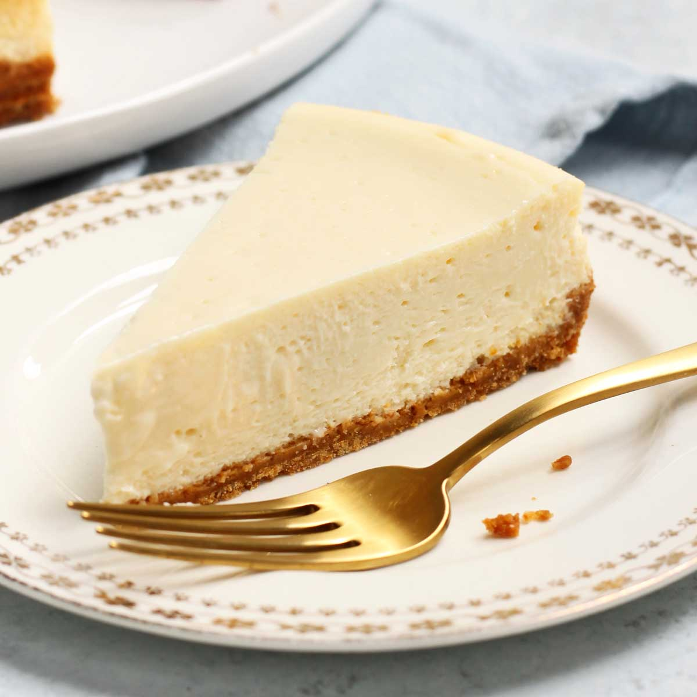

Receta de Cheesecake

Description
This cream cheese pound cake recipe is rich, decadent, crowd-pleasing, and easy to make with ingredients you likely already have on hand.
Ingredients
- Butter: This easy recipe starts with three sticks of butter.
- Cream cheese: Of course, youll need cream cheese! One 8-ounce block, to be exact.
- Sugar: Youll need three cups of white sugar.
- Eggs: Six eggs lend moisture and help bind the batter together.
- Flour: All-purpose flour gives the cake structure.
- Vanilla: Vanilla extract enhances the overall flavor of the cream cheese pound cake.
Steps
- Gather all ingredients.
- Preheat the oven to 325 degrees F (165 degrees C). Grease and flour a 10-inch tube pan.
- Cream butter and cream cheese together in a mixing bowl until smooth. Gradually add sugar and beat until fluffy.
- Add eggs, two at a time, beating well with each addition. Add flour all at once and mix in. Mix in vanilla. Pour batter into the prepared cake pan.
- Bake in the preheated oven for 1 hour and 20 minutes, checking for doneness at 1 hour. A toothpick inserted into the center of the cake should come out clean. Remove and cool before serving.
- Serve and enjoy!
Home